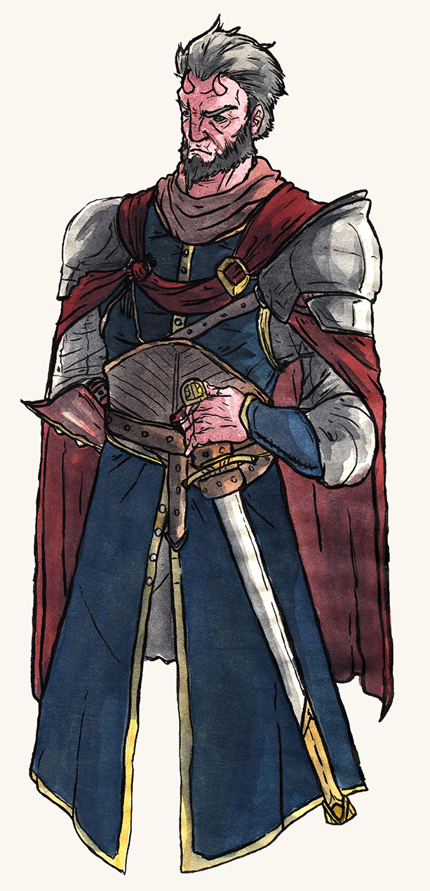

Greghor Stonhyr¶

General Info¶
- Age : 47
- Race : Tiefling (Zariel)
- Traits:
- Weary
- Formal
- Conscientious
Occupation¶
Current¶
-
Role : Lord Protector of the Republic of Siddarmark
25th in Succession, Elected 570 AGS
-
Location : Siddar City, Republic of Siddarmark
Former¶
-
Role : Commander of the Expedition
Comissioned 561 AGS
-
Location : Siddar City, Republic of Siddarmark
-
Role : Colonel, Southgard Rapid Response Regiment, REF
Comissioned 555 AGS
-
Location : Siddar City, Republic of Siddarmark
Description¶
Colloquially known as the Shield of the Republic, Greghor Stonhyr is widely credited for the current period of peace and stability within the Republic.
Upon first glance, many question whether the weary, ragged man standing before them could really withstand the fury of an orcish warband. Even upon confirming his identity, there is usually a flash of disappointment, or even pity, at the remains of what must have at one point been a heroic figure. In truth, the valiant figure of public imagination is just that: imaginary. Stonhyr's strength lies less within the blade, and more in the soul. None who have been in battle with Stonhyr would doubt the immense willpower hiding within.
Orphaned at a young age, Greghor Stonhyr was raised in a state-funded orphanage, affording him a rare chance at a proper education. Instilled with a deep and powerful admiration of the Republic, Stonhyr immediately enlisted with the Republic Army upon coming of age.
Despite rampant racial prejudice, he quickly gained a reputation as a fierce soldier and a natural leader. During the Orcish uprisings in the early 550's, Stonhyr distinguished himself by leading a series of hit-and-run raids on the orcish encampments, preventing the hordes form coalescing and allowing the larger Republic Army to deal with each threat independently.
Three decades of distinguished service made Stonhyr a household name within the Republic. Under his leadership of the REF, the Republic enjoyed nearly a decade of security and stability, leading to the rapid consolidation of independent settlements in the Old Province under the Republic's flag. In 570 AGS, Stonhyr was implicated in a plot to replace the Republic's leadership with simulacra while simultaneously throwing the nation to the brink of civil war. Though the attempted coup d'etat by a simulacrum Stonhyr was quickly supressed, it was revealed that the incumbent Lord Protector during the crisis, Lyhl Habborlyn, was presumably killed and replaced with a simulacrum himself.
After the results of a General Election ordered by Ahrys Tohmys, Sergeant-at-Arms of the Siddar Gendarmerie, Parliament convened on 570Y 6M IDE and unanimously elected Greghor Stonhyr as the 25th Lord Protector of the Republic of Siddarmark.
Though there are those who believe it is improper to allow someone of monstrous heritage to hold such a distinguished position, Stonhyr's heritage makes him a symbol of the Republic's ideals - that good and evil are a choice; and that greatness is earned, not inherited.
Notable Events¶
-
Ambush Outside Cantfall :
In early 570Y, Stonhyr's REF forces were conducting an evacuation of the gnoll-attack survivors of Cantfall. During the evacuation, the detachment was ambushed by the gnoll war band. The combined group makes a hasty retreat to a nearby abandoned fort, where the REF repels dozens of gnoll attacks. Although the gnolls are eventually routed, the repeated attacks leave all but seventy of the REF soldiers dead.
-
Election to Lord Protector :
Following the Parliamentary General Election of 570 AGS, Stonhyr was notified of his election to the Protectorship while recuperating in an REF hospital. His first act as Lord Protector was to extend the comissions of the various Sergeant-at-Arms and order a full and thorough investigation into the attempted coup. The sweep and subsequent trials and convictions before the High Court of Inquiry helped restore faith in the Republic's government following the near burning of the city.